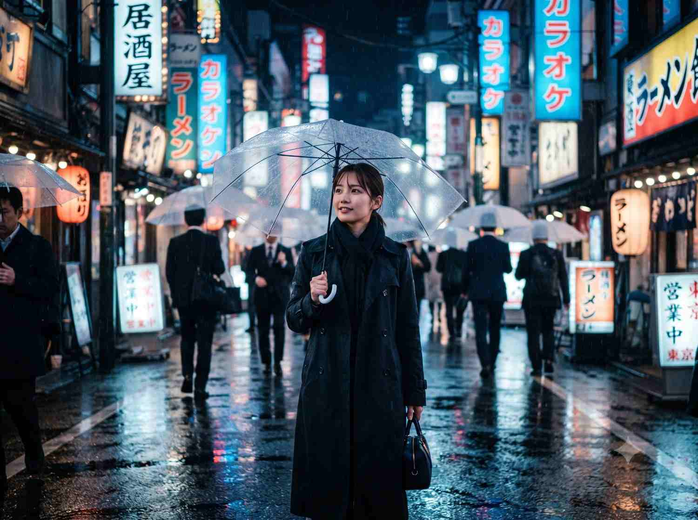

Travel portrait prompt
City-of-the-world scene
Place a subject in a rainy Tokyo night scene with reflective neon, cinematic depth, and a carefully preserved likeness.

Copy this prompt
Place the subject from the reference photo into a rainy evening street in Tokyo's Shinjuku district, neon signs reflecting on wet pavement. Cinematic wide shot, shallow depth of field, subject holding a clear umbrella. Preserve the subject's exact face and proportions while matching the ambient neon color temperature on their skin.
How to use it
- Attach a clear reference photo of the subject.
- Use the prompt with an image-generation tool that accepts reference images.
- Swap Shinjuku for another destination or adjust the weather and lighting.